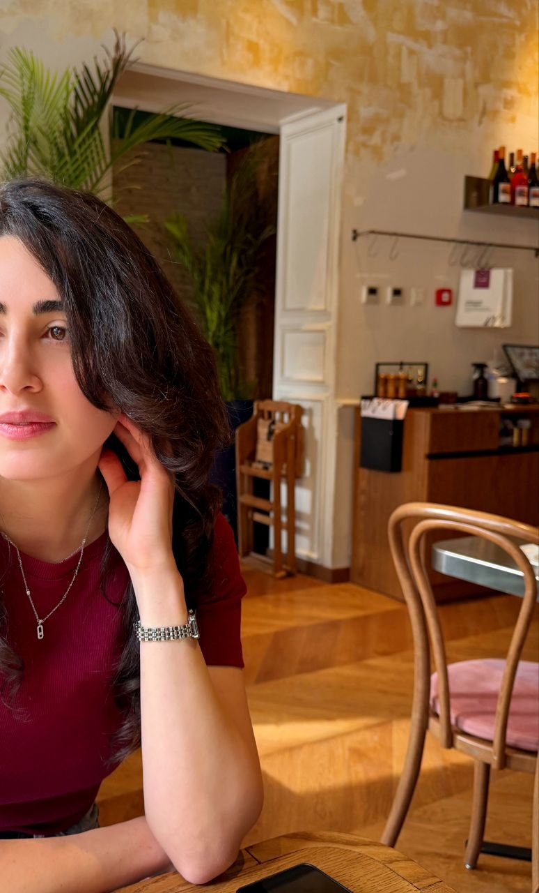
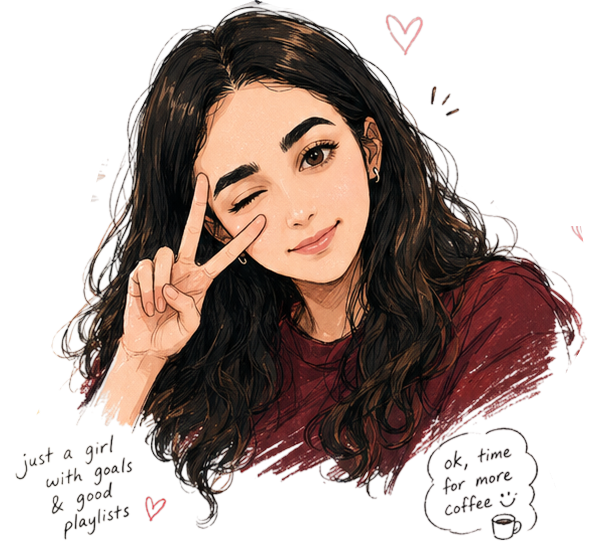
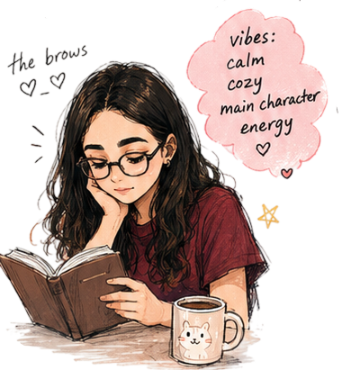
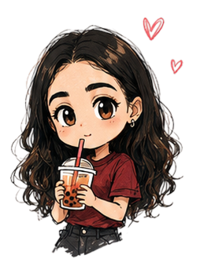
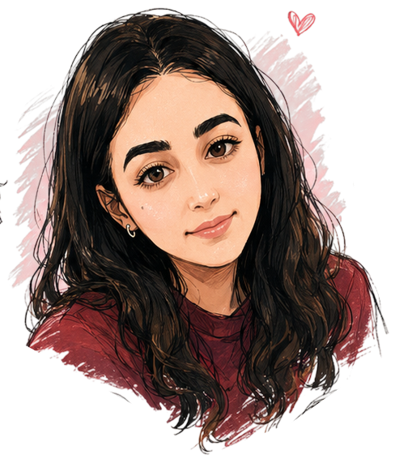
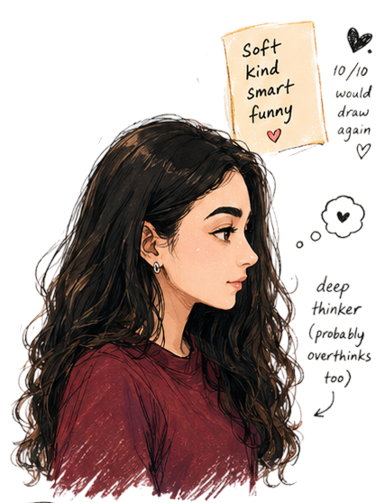
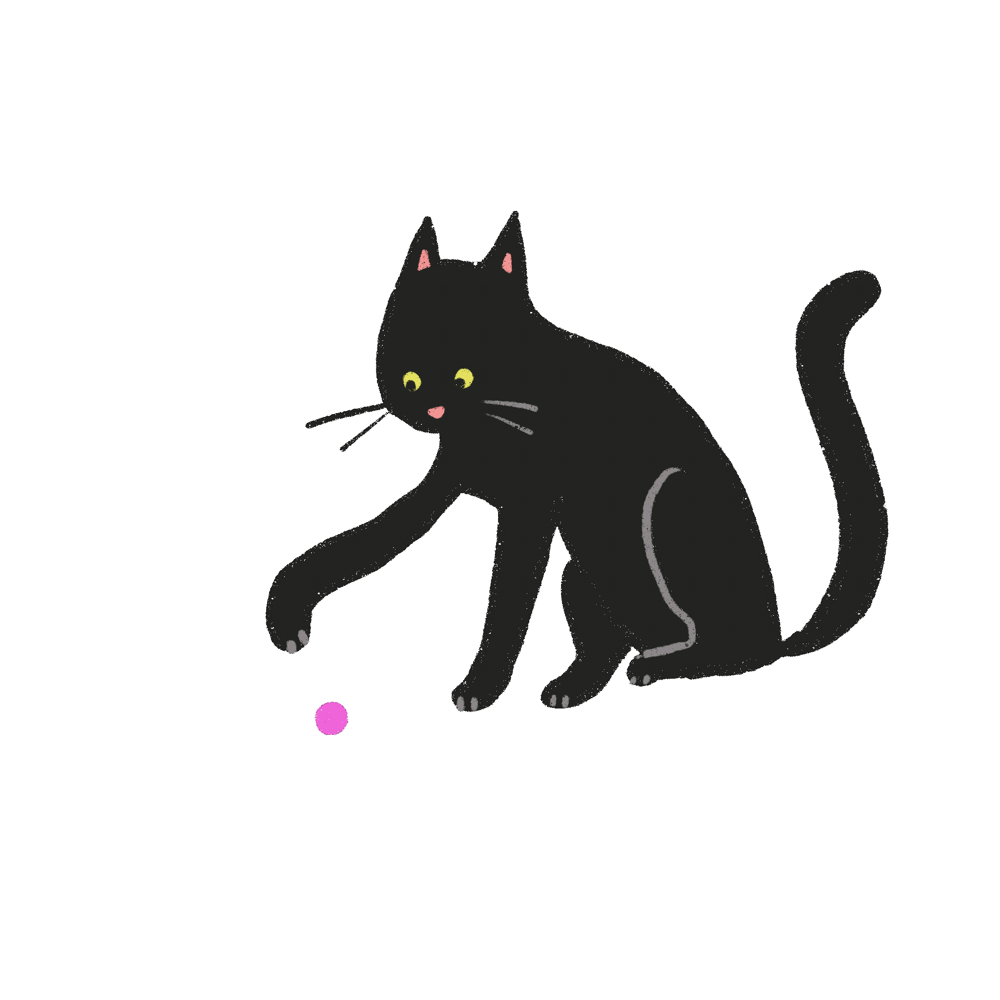

Mara Melkonyan · UX/UI + Graphic Designer
preparing something beautiful...
0%




✶ little idea ↗ + +
Mara Melkonyan · UX/UI + Graphic Designer
tiny interactions matter
little things i love ♥
